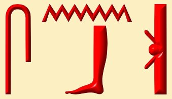
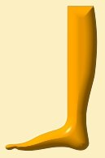
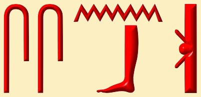
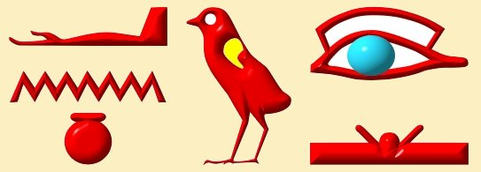

9 Bodies and Health
Health and Beauty -
Ancient Egyptian StyleHealth and beauty today are two of the most dominant industries on the face of earth, not because human beings have evolved but because people today associate more with the material side of life and serving the human body and its material needs has become the focus of attention. Unfortunately, even within this current popular cycle, we only touch the surface of both health and beauty. Most countries cannot afford for their people to be healthy because millions of people would go out of business. You have only to take a look at our own state of affairs to see cigarettes being sold in supermarkets alongside our food and yet, while we ban heroin, cigarettes are more harmful than heroin. An injection of heroin will reach the brain cells in 14 seconds but the nicotine from one puff of a cigarette will reach the brain cells in 7 seconds.
Modern medicine is built upon the idea of fighting evil and thus the aim is to produce different serums to kill a variety of viruses and germs. Unfortunately, the effect of these same serums is to kill the patients in the meantime. The pharmaceutical companies depend upon ill people to sell their drugs, which is why the pharmaceutical industry is one of the most lucrative fields today.
People have become dependent on their governments, healthcare systems and modern medicines for their well-being but in vain. The governments are not your healers; they are your dealers, propelling you to be dependent on all types of drugs – from Tums to Prozac.
So, what is the solution?
The solution for our downfall in both health and beauty is lying dormant within the ancient Egyptian doctrines of life. You should not listen to the so-called Egyptologists, who are obsessed with unearthing dead bodies and using them as a means for more financial gain. An old poet said:
“We patch up our mundane life by tearing off our spiritual life, so neither of them would remain”.
Let me start by explaining the concepts of health and beauty as the ancient Egyptians viewed them.
The Egyptian word for health is Senb 

the leg symbolising duality or the mundane life; and
The ancient Egyptian physicians’ main goal was to lead people to
health, which is the state of harmony. In order to reach this point, one must
heal whatever problems exist within the living human. Healing in Egyptian,
therefore, is called Sseneb 
The ancient Egyptian system of natural medicine does not believe in fighting evil because we are not here on earth in order to fight evil, as many spiritual and political systems would have you believe today. We are here to develop good and, in so doing, we will be vanquishing evil. The ancient Egyptian natural medicine, therefore, focuses on developing the patient’s inner resources, which will become the means to conquer the evil, without actively focusing on the evil itself. This process is described as ‘doing without doing and everything gets done’. If you focus on fighting evil in life, you will end up becoming entangled with it, following its twisted ways and ultimately becoming evil yourself.
The ancient Egyptian natural medicine states clearly that to be in a state of health you must have good eating habits, good exercise systems for the nine bodies (explained below) and a good system for conducting your emotions. These three ways are explained in detail in the first principles of Egyptian natural medicine, which are the six pillars of healing.
We should recognise that we do not live once and then vanish forever. We are here to test our soul’s resolve and courage to see the real within the illusion and thus we plant seeds in this life for eternity, in order to gain the power to live eternally.
The human being is composed not of one body but nine. Hence there are nine essential natural laws, commonly known as the Enneagram. The nine bodies are:
Ren (the sound body), Eb (the heart body), Khat (the physical body), Sekhem (the electromagnetic body), Ka (the desire body), Kihibit (the astral body), Ba (the soul body), Saah (the spiritual body) andKhu (the universal spirit of God within every atom).

If we are capable of establishing harmony within these nine
bodies, health would be ours not just for this lifetime but for eternity.
The ancient Egyptian sages founded a concrete system of physical culture, which enables you to acquire harmony in this life and beyond. But, in order to fulfil this promise upon earth, you cannot achieve it by proxy or halfway. Remember that you cannot be pregnant a little bit; likewise, you cannot be healthy a little bit. You cannot like the fruit but dislike the tree or like the tree but dislike its fruit. The time has come to end half measures and to embark upon a full-measure solution. The ancient Egyptian sages founded the most perfect system in the past, present and future and it is there for you to partake in, if you find the courage and resolve. We do not die because of broken limbs; usually we die because of broken hearts.
The Egyptian word for beauty is Aanu 
The ancient sages of Egypt discovered so many things that we are still discovering today. Fifty years ago, some German scientists translated the Ebers Papyrus, which was the ancient Egyptian physicians’ manual for medicines. When the scientists read one of the treatments, they laughed and called it bathroom pharmacology because one of the treatments for weak eyesight was to take capsules of bat dung. Today, however, these same scientists should cry because it has recently been discovered that bat dung contains a concentrated dose of vitamin A, which helps weak eyesight. In fact, it contains more vitamin A than cod liver oil, which is the highest dosage that we have discovered today.
This poses many points for consideration:-
- The ancient Egyptians knew about the properties of all vitamins, amino acids, enzymes and herbs, including where to find them in nature in their most concentrated form and their use in treating ailments and illnesses
- The ancient Egyptians knew about what we now call Optimum Daily Allowance (ODA), in opposition to Recommended Daily Allowance (RDA), which has only recently been discovered
If you have read this article and your spirit is ignited, I implore you to do something about it and do not go back to sleep.
With showers of blessings.
Dr. Ramses Seleem
Principal, Sia Academy For Ancient Egyptian Studies